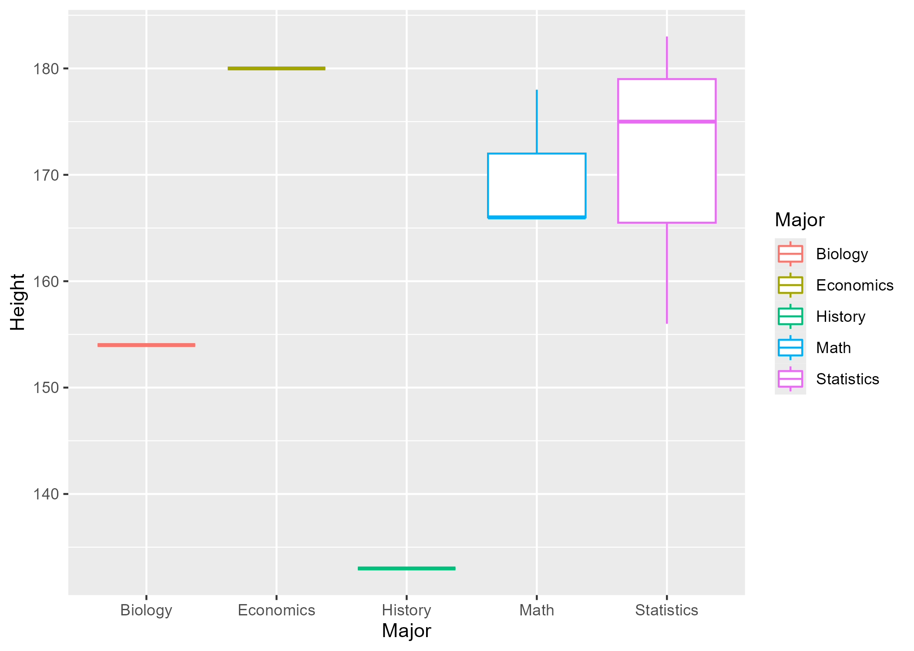
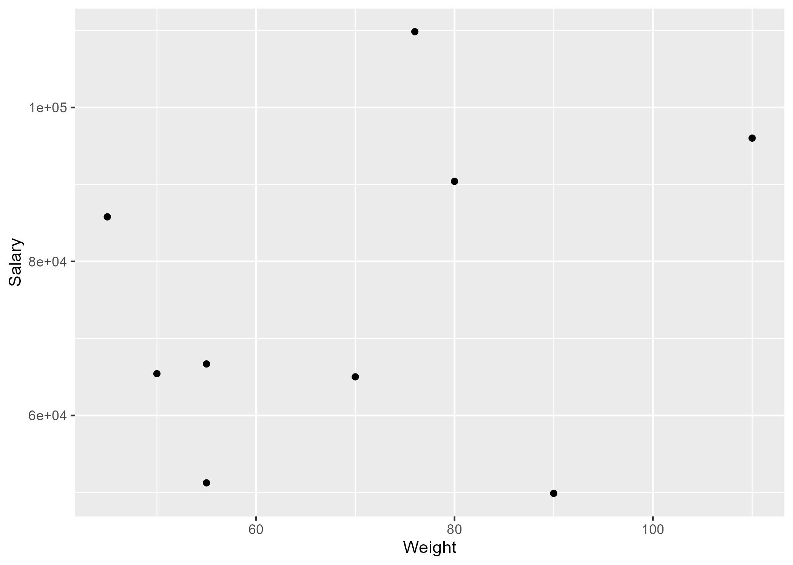

Manuscript/Report Template for a Data Analysis Project
Vincent Nguyen contributed to this exercise!!!
Thanks for help from Alexis Gonzalez and Hope Grismer!!!
LET’S GO GROUP 3!!!
The structure below is one possible setup for a data analysis project (including the course project). For a manuscript, adjust as needed. You don’t need to have exactly these sections, but the content covering those sections should be addressed.
This uses MS Word as output format. See here for more information. You can switch to other formats, like html or pdf. See the Quarto documentation for other formats.
1 Summary/Abstract
Write a summary of your project.
{{< pagebreak >}}
2 Introduction
2.1 General Background Information
Provide enough background on your topic that others can understand the why and how of your analysis
2.2 Description of data and data source
Describe what the data is, what it contains, where it is from, etc. Eventually this might be part of a methods section. I added two more columns to the data file, namely Salary and Major. The Salary column contains annual salaries as numeric values. The Major column has categorical values denoting different majors.
2.3 Questions/Hypotheses to be addressed
State the research questions you plan to answer with this analysis.
To cite other work (important everywhere, but likely happens first in introduction), make sure your references are in the bibtex file specified in the YAML header above (here dataanalysis_template_references.bib) and have the right bibtex key. Then you can include like this:
Examples of reproducible research projects can for instance be found in (McKay, Ebell, Billings, et al., 2020; McKay, Ebell, Dale, Shen, & Handel, 2020)
{{< pagebreak >}}
3 Methods
Describe your methods. That should describe the data, the cleaning processes, and the analysis approaches. You might want to provide a shorter description here and all the details in the supplement.
3.1 Data aquisition
As applicable, explain where and how you got the data. If you directly import the data from an online source, you can combine this section with the next.
3.2 Data import and cleaning
Write code that reads in the file and cleans it so it’s ready for analysis. Since this will be fairly long code for most datasets, it might be a good idea to have it in one or several R scripts. If that is the case, explain here briefly what kind of cleaning/processing you do, and provide more details and well documented code somewhere (e.g. as supplement in a paper). All materials, including files that contain code, should be commented well so everyone can follow along.
3.3 Statistical analysis
Explain anything related to your statistical analyses.
{{< pagebreak >}}
4 Results
4.1 Exploratory/Descriptive analysis
Use a combination of text/tables/figures to explore and describe your data. Show the most important descriptive results here. Additional ones should go in the supplement. Even more can be in the R and Quarto files that are part of your project.
Table 1 shows a summary of the data.
Note the loading of the data providing a relative path using the ../../ notation. (Two dots means a folder up). You never want to specify an absolute path like C:\ahandel\myproject\results\ because if you share this with someone, it won’t work for them since they don’t have that path. You can also use the here R package to create paths. See examples of that below. I recommend the here package, but I’m showing the other approach here just in case you encounter it.
| skim_type | skim_variable | n_missing | complete_rate | character.min | character.max | character.empty | character.n_unique | character.whitespace | factor.ordered | factor.n_unique | factor.top_counts | numeric.mean | numeric.sd | numeric.p0 | numeric.p25 | numeric.p50 | numeric.p75 | numeric.p100 | numeric.hist |
|---|---|---|---|---|---|---|---|---|---|---|---|---|---|---|---|---|---|---|---|
| character | Major | 0 | 1 | 4 | 10 | 0 | 5 | 0 | NA | NA | NA | NA | NA | NA | NA | NA | NA | NA | NA |
| factor | Gender | 0 | 1 | NA | NA | NA | NA | NA | FALSE | 3 | M: 4, F: 3, O: 2 | NA | NA | NA | NA | NA | NA | NA | NA |
| numeric | Height | 0 | 1 | NA | NA | NA | NA | NA | NA | NA | NA | 165.66667 | 15.97655 | 133 | 156 | 166 | 178 | 183 | ▂▁▃▃▇ |
| numeric | Weight | 0 | 1 | NA | NA | NA | NA | NA | NA | NA | NA | 70.11111 | 21.24526 | 45 | 55 | 70 | 80 | 110 | ▇▂▃▂▂ |
| numeric | Salary | 0 | 1 | NA | NA | NA | NA | NA | NA | NA | NA | 75588.11111 | 20803.94505 | 49877 | 65012 | 66685 | 90400 | 109841 | ▅▇▂▅▂ |
4.2 Basic statistical analysis
To get some further insight into your data, if reasonable you could compute simple statistics (e.g. simple models with 1 predictor) to look for associations between your outcome(s) and each individual predictor variable. Though note that unless you pre-specified the outcome and main exposure, any “p<0.05 means statistical significance” interpretation is not valid.
Figure 1 shows a scatterplot figure produced by one of the R scripts.

4.3 Full analysis
Use one or several suitable statistical/machine learning methods to analyze your data and to produce meaningful figures, tables, etc. This might again be code that is best placed in one or several separate R scripts that need to be well documented. You want the code to produce figures and data ready for display as tables, and save those. Then you load them here.
Example Table 2 shows a summary of a linear model fit.
| term | estimate | std.error | statistic | p.value |
|---|---|---|---|---|
| (Intercept) | 149.2726967 | 23.3823360 | 6.3839942 | 0.0013962 |
| Weight | 0.2623972 | 0.3512436 | 0.7470519 | 0.4886517 |
| GenderM | -2.1244913 | 15.5488953 | -0.1366329 | 0.8966520 |
| GenderO | -4.7644739 | 19.0114155 | -0.2506112 | 0.8120871 |
{{< pagebreak >}}
5 Discussion
5.1 Summary and Interpretation
Summarize what you did, what you found and what it means.
5.2 Strengths and Limitations
Discuss what you perceive as strengths and limitations of your analysis.
5.3 Conclusions
What are the main take-home messages?
Include citations in your Rmd file using bibtex, the list of references will automatically be placed at the end
This paper (Leek & Peng, 2015) discusses types of analyses.
These papers (McKay, Ebell, Billings, et al., 2020; McKay, Ebell, Dale, et al., 2020) are good examples of papers published using a fully reproducible setup similar to the one shown in this template.
Note that this cited reference will show up at the end of the document, the reference formatting is determined by the CSL file specified in the YAML header. Many more style files for almost any journal are available. You also specify the location of your bibtex reference file in the YAML. You can call your reference file anything you like, I just used the generic word references.bib but giving it a more descriptive name is probably better.
{{< pagebreak >}}
6 Vincent’s work
6.1 Boxplot of Height ~ Major
To explore if the distribution of height has difference across different majors, we made a boxplot of height grouped by major. As shown, observations whose major is Economics, Math, or Statistics have a higher height compared to those whose major is Biology or History. However, only a few observations were left after data cleaning. According to the plot, only one observation was left for Biology, Economics, and History. The too small sample size makes the finding not convincing.
Figure 2 shows the boxplot of height grouped by major.

6.2 Scatterplot of Salary ~ Weight
The scatterplot below shows the relationship between salary and weight. There is generally a positive association between salary and weight. However, the variance is not constant as the variation in salary is greater at higher weights. A logarithmic transformation for salary could possibly solve this problem as the two variables are not on the same scale.
Figure 3 shows the scatterplot of salary and weight.
